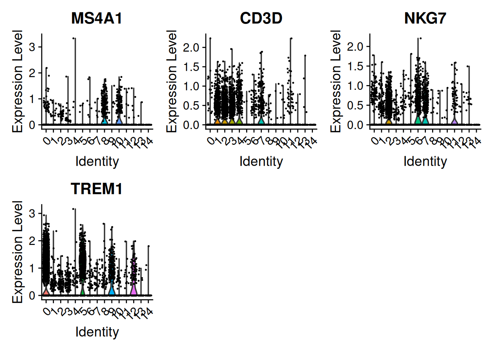
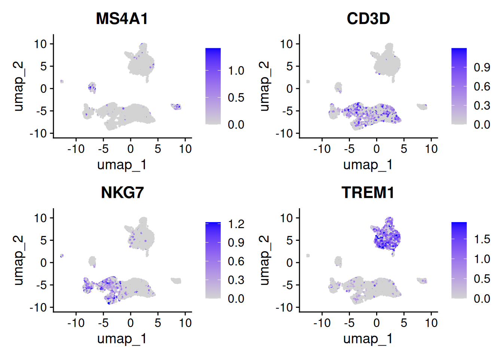

This lab relies on the fragments file of a 10x Genomics scATAC-seq experiment (~2 GB), already available in your workshop session. It needs ~12 GB of memory, and takes ~15 minutes to run from start to end.
TipAims
Import cells from human PBMC scATACseq dataset
Perform scATACseq quality controls and checks
Filter, normalize and plot PBMC scATACseq dataset
Compute gene activity scores, check known markers and annotate scATAC clusters
Perform differential peak accessibility analysis
ATAC-seq data may be obtained in isolation using a single-cell ATAC-seq protocol (e.g. 10X scATACseq) or in combination with gene expression data using a single-cell multiome protocole (e.g. 10X multiome and SHARE-seq).
Several packages are currently avaialble to process scATAC-seq data in R. These include Signac and ArchR. This lab will closely follow the processing steps outlined in Signac, which interfaces well with Seurat for single-cell analysis.
In this lab, we will process a PBMC single-cell ATAC-seq (scATAC-seq) dataset and perform preliminary analysis to assess quality of these data. The data for this lab comes from 10X Genomics. The dataset contains roughly ~ 10,000 cells.
13.1 Process human PBMC dataset
13.1.1 Data
The files we need are directly available from the 10x Genomics website. They have already been downloaded in your workshop session, in the ~/Share/scATAC/ folder. Note that the fragments file and its index (.tbi) must sit next to each other, with matching names.
To run this lab outside of the workshop session, download the files from the 10x Genomics website, e.g. in a ~/data/scATAC folder (this may take a few minutes, the fragments file weighs ~2 GB):
Notice how the count matrix is in a .h5 format. We have already encountered this kind of 10x Genomics outputs in Lab 3. Back then, we imported them with DropletUtils::read10xCounts.
The next step is to aggregate counts and features into a ChromatinAssay, a scATAC-seq flavour of Seurat standard Assays. The documentation for ?CreateChromatinAssay indicates that the user can provide:
A fragments file, corresponding to the full list of all unique fragments mapped across all single cells.
Genomic annotations to the ChromatinAssay, corresponding to gene annotations, promoter positions, etc. Such annotations can be generated from Ensembl.
NoteQuestion
Generate human annotations from Ensembl using a parsing function from Signac.
NoteAnswer
R
## - Get human gene annotations (hg19/GRCh37) to feed it into the future `ChromatinAssay`annotations<-GetGRangesFromEnsDb(ensdb =EnsDb.Hsapiens.v75::EnsDb.Hsapiens.v75)## OpenTelemetry error: there is no package called 'otelsdk'GenomeInfoDb::seqlevelsStyle(annotations)<-'UCSC'GenomeInfoDb::genome(annotations)<-"hg19"
Create a ChromatinAssay using counts, features, fragments and annotations.
NoteAnswer
R
## - Create Chromatin Assayassay<-Signac::CreateChromatinAssay( counts =cnts, ranges =features, fragments =fragments_file, annotation =annotations, genome ="hg19", min.cells =10, min.features =10)## Computing hashassay## ChromatinAssay data with 87561 features for 8728 cells## Variable features: 0 ## Genome: hg19 ## Annotation present: TRUE ## Motifs present: FALSE ## Fragment files: 1
What are the dimensions of this object? Are they comparable to the count matrix? Comment.
Which analysis are the fragments required for, exactly?
Could we still perform normalization/clustering/annotation without them? And motif enrichment analysis?
Since we do have the fragments file at hand, most of the QC steps are available (e.g. TSSEnrichment, NucleosomeSignal or fragment size distribution). Let’s go through them one by one.
NoteAnswer
R
# compute nucleosome signal score per cellPBMC<-NucleosomeSignal(object =PBMC)PBMC## An object of class Seurat ## 87561 features across 8728 samples within 1 assay ## Active assay: ATAC (87561 features, 0 variable features)## 2 layers present: counts, data# compute TSS enrichment score per cellPBMC<-Signac::TSSEnrichment(object =PBMC)## Extracting TSS positions## Extracting fragments at TSSs## ## Computing TSS enrichment scorePBMC## An object of class Seurat ## 87561 features across 8728 samples within 1 assay ## Active assay: ATAC (87561 features, 0 variable features)## 2 layers present: counts, data# plot TSS enrichment vs. number of fragments in peaksDensityScatter(PBMC, x ='nCount_ATAC', y ='TSS.enrichment', log_x =TRUE, quantiles =TRUE)
In the current development version of Signac, NucleosomeSignal() and TSSEnrichment() are deprecated in favour of ATACqc(), which computes all these QC metrics at once with the external fragtk tool. fragtk is not installed in the workshop environment: we keep using the deprecated functions, which still work (their deprecation warnings are hidden on this page).
Let’s compare the distributions of the different QC metrics, for cells with a high or a low TSS enrichment score.
The TSSPlot() function from Signac plots the average accessibility profile around TSSs, for groups of cells. It requires running TSSEnrichment() with fast = FALSE, which stores the accessibility of each position around each TSS: this takes a lot of memory (> 16 GB for this dataset), so we do not run it in the workshop sessions.
The FragmentHistogram function from Signac can be used to plot the fragment size distribution in peaks with different nucleosome signals.
NoteQuestion
Group genomic loci by their nucleosome signal (> 4 or < 4) and plot the fragment size distribution.
Just like standard scRNAseq data, scATACseq data needs to be filtered to remove low-quality cells and peaks.
NoteQuestion
Filter the Seurat object (cells and features) as deemed appropriate.
NoteAnswer
R
## - Filter dataPBMC<-subset(PBMC, subset =nCount_ATAC>3000&nCount_ATAC<100000)PBMC<-subset(PBMC, subset =nFeature_ATAC>1000&nFeature_ATAC<20000)PBMC<-subset(PBMC, subset =FRiP>0.30)PBMC<-subset(PBMC, subset =TSS.enrichment>2.5&nucleosome_signal<4)PBMC## An object of class Seurat ## 87561 features across 8165 samples within 1 assay ## Active assay: ATAC (87561 features, 0 variable features)## 2 layers present: counts, data## - Remove peaks with low coveragePBMC<-PBMC[rowSums(GetAssayData(PBMC, layer ="counts"))>10, ]PBMC<-PBMC[rowSums(GetAssayData(PBMC, layer ="counts")>0)>10, ]PBMC## An object of class Seurat ## 87207 features across 8165 samples within 1 assay ## Active assay: ATAC (87207 features, 0 variable features)## 2 layers present: counts, data
13.1.6 Dimensionality reduction and clustering
Now that the dataset is filtered, we can proceed to data normalization, dimensionality reduction and clustering. Compared to scRNAseq, scATACseq data is much sparser and has a higher dimensionality. This has important implications for the choice of normalization and dimensionality reduction methods. scATACseq data are generally normalized using a TF-IDF normalization, which is implemented in the RunTFIDF function in Signac, and dimensionality reduction is performed using LSI (Latent Semantic Indexing) implemented in the RunSVD function.
NoteQuestion
Normalize then further reduce the dimensionality for visualization purposes.
NoteAnswer
R
## - Normalize dataPBMC<-RunTFIDF(PBMC)## Performing TF-IDF normalization## - Reduce dimensionalityPBMC<-FindTopFeatures(PBMC, min.cutoff ='q50')PBMC<-RunSVD(PBMC)## Running SVD## Scaling cell embeddings## - The first LSI component is often correlated with sequencing depthDepthCor(PBMC)
What can you observe in the UMAP projection of the dataset? Comment on the separation of some cell types into different spatially-resolved clusters.
13.2 Compute gene activity scores
Signac’s GeneActivity() function require scATACseq fragment information. Since we have them, we can estimate a gene activity score for each gene in the annotations.
R
gene.activities<-GeneActivity(PBMC)## Extracting gene coordinates## Warning in SingleFeatureMatrix(fragment = fragments[[x]], features =## features, : 13 features are on seqnames not present in the fragment file.## These will be removed.## Extracting reads overlapping genomic regions
We can now save this new object as an Assay in the PBMC object and normalize it.
R
PBMC[['RNA']]<-CreateAssayObject(counts =gene.activities)## Warning: Non-unique features (rownames) present in the input matrix, making## unique# - Normalize the new RNA assay.PBMC<-NormalizeData( object =PBMC, assay ='RNA', normalization.method ='LogNormalize', scale.factor =median(PBMC$nCount_RNA))PBMC## An object of class Seurat ## 107217 features across 8165 samples within 2 assays ## Active assay: ATAC (87207 features, 43610 variable features)## 2 layers present: counts, data## 1 other assay present: RNA## 2 dimensional reductions calculated: lsi, umap
One can now visualize expression of individual markers across clusters to infer cluster identity.
NoteQuestion
Assess the expression of known markers across clusters, projecting the cells in a 2D UMAP.
NoteAnswer
R
DefaultAssay(PBMC)<-'RNA'VlnPlot( object =PBMC, features =c('MS4A1', # B-cell'CD3D', # T-cell'NKG7', # NK cell'TREM1'# Monocytes))

FeaturePlot( object =PBMC, features =c('MS4A1', 'CD3D', 'NKG7', 'TREM1'), max.cutoff ='q95')

Based on these markers, we can annotate clusters. Here, each cluster is annotated with the cell type whose marker has the highest average gene activity in the cluster: check this annotation against the plots above! Rarer cell types (e.g. dendritic cells) would require additional markers.
13.3 Find peaks differentially accessible across clusters
Finally, we can perform differential peak accessibility analysis to identify peaks that are differentially accessible between clusters. This is done using the FindMarkers function from Seurat, run on the ATAC assay. By default, FindMarkers uses a (fast) Wilcoxon rank sum test.
TipAccounting for sequencing depth
The Signac documentation recommends a logistic regression test, using the total number of fragments per cell as a latent variable to account for differences in sequencing depth (test.use = 'LR', latent.vars = 'nCount_ATAC'). This is more rigorous, but much slower (> 30 minutes for this comparison): try it after the workshop!